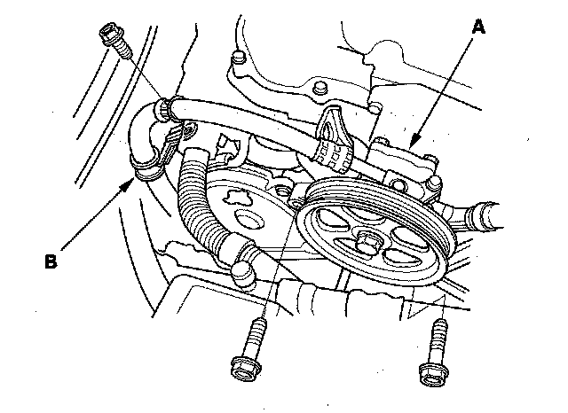
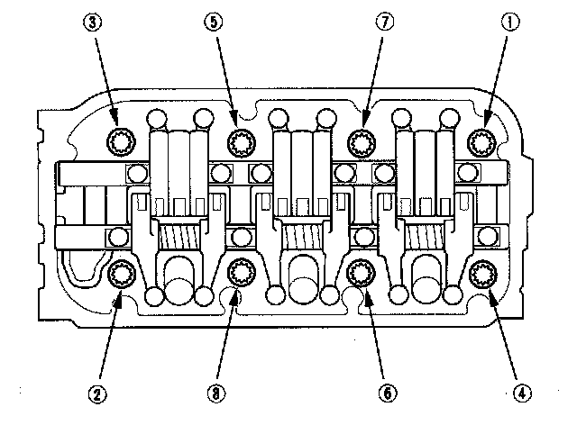

Cylinder Head Removal
Cylinder Head RemovalNOTE:
^ Use fender covers to avoid damaging painted surfaces.
^ To avoid damage, unplug the wiring connectors carefully while holding the connector portion.
^ To avoid damaging the cylinder head, wait until the engine coolant temperature drops below 100° F (38° C) before loosening the cylinder head bolts.
^ Mark all wiring and hoses to avoid misconnection. Also, be sure that they do not contact other wiring or hoses, or interfere with other parts.
1. Make sure you have the anti-theft codes for the audio system and navigation system (if equipped).
2. Relieve the fuel pressure.
3. Disconnect the negative cable from the battery.
4. Drain the engine coolant.
5. Remove the drive belt.
6. Remove the power steering (P/S) pump (A), and P/S hose clamp (B).

7. Remove the alternator.
8. Remove the timing belt.
9. Remove the intake manifold.
10. Remove the six ignition coils.
11. Remove the upper radiator hose (A) and lower radiator hose (B).
12. Remove the quick-connect fitting cover (A), then disconnect the fuel feed hose (B).
13. Remove the two nuts securing the purge joint.
14. Remove the engine wire harness connectors and wire harness clamps from the cylinder head.
^ Six injector connectors
^ Engine coolant temperature (ECT) sensor 1 connector
^ Crankshaft position (CKP) sensor connector
^ Exhaust gas recirculation (EGR) valve connector
^ Rocker arm oil control solenoid connector
^ Rocker arm oil pressure switch connector
^ Oil pressure switch connector
^ Two air fuel ratio (A/F) sensor connectors
^ Two secondary heated oxygen sensor (secondary H02S) connectors
15. Remove the front warm up three-way catalytic converter (front WU-TWC) and rear warm up three-way catalytic converter (rear WU-TWC).
16. Remove the connector bracket from the front cylinder head.
17. Remove the bracket from the rear cylinder head.
18. Remove the fuel rails.
19. Remove the water passage.
20. Remove the front and rear camshaft pulleys (A) and back covers (B).
21. Remove the cylinder head cover.
22. Remove the cylinder head bolts. To prevent warpage, loosen the bolts in sequence 1/3 turn at a time; repeat the sequence until all the bolts are loosened.

23. Remove the cylinder head.